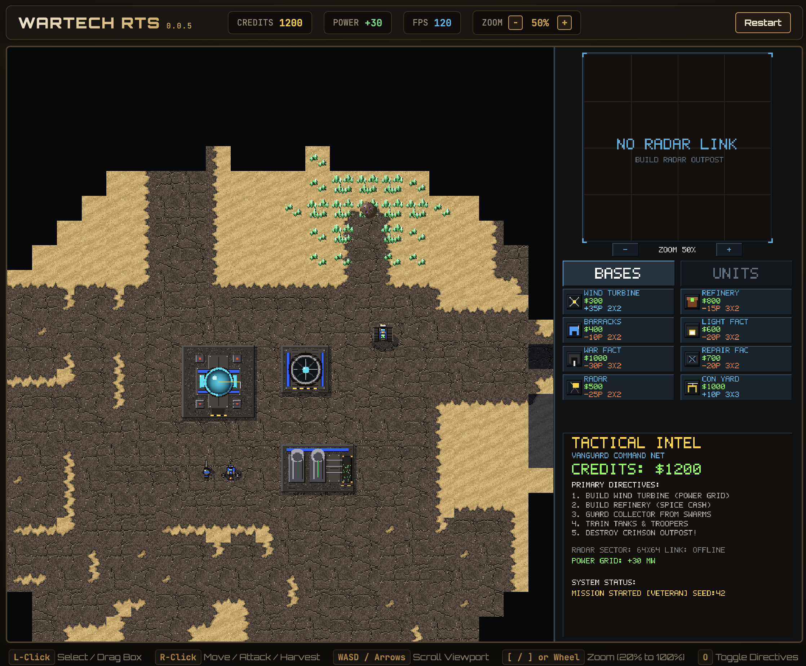

WARTECH RTS
A free old-school 2D real-time strategy game for the browser.
What is WarTech?
WarTech is an old-school top-down 2D real-time strategy game that runs entirely in your browser — no downloads, no installers, no accounts. Command the Vanguard against the Crimson Syndicate in a story campaign, or test yourself against the AI in skirmish matches on procedural maps.
Harvest resources, manage power, construct a base, raise an army, and outmanoeuvre the enemy — the full classic RTS loop, rendered old-school style on a 1024×768 canvas.

Base building, harvesting, and combat in WarTech RTS.
Features
- Story campaign plus AI skirmish on procedural maps
- Base building with power and economy management
- Combat units, turrets, harvesters — and battlefield wrecks
- Tactical zoom, control groups, objectives tracker
- Campaign progress saved in your browser
- Free to play, no account needed
How to play
Left-click to select units and buildings (or drag a selection box), right-click to issue move, attack, and harvest orders. Scroll the viewport with WASD or the arrow keys, zoom with the mouse wheel or [ / ], and press O to toggle the objectives tracker. Full controls are listed under the game when you play WarTech.
Under the hood
WarTech is written in Java and compiled to WebAssembly GC with TeaVM, rendering every frame in software onto a 32-bit frame buffer. The simulation uses fixed-size entity pools and deterministic randomness, and it can even run headless on the JVM for automated testing. The source is open, make it your own!
Made by NoFuss
WarTech is built by Ewald Horn from NoFuss Solutions. I make fun things for the browser and beyond. If you enjoy strategy, building, and tinkering, come have a look at my other toys. I also won't be terribly upset if you hired me to work on your software idea. Just saying...